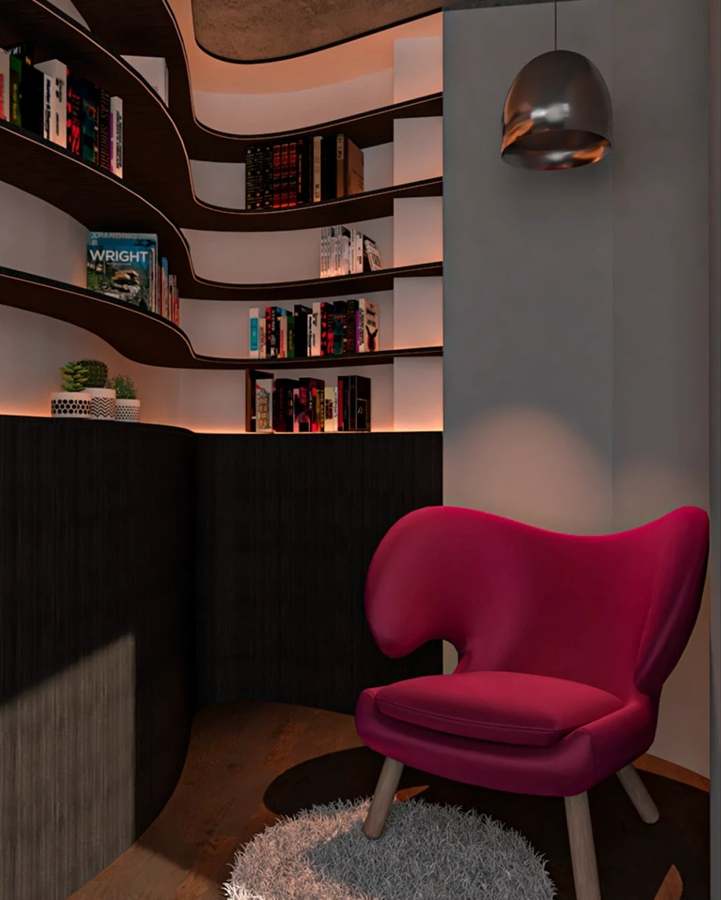
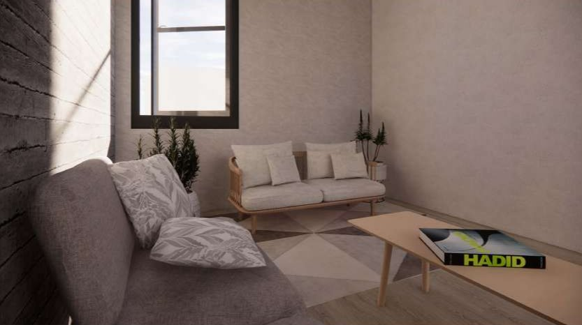
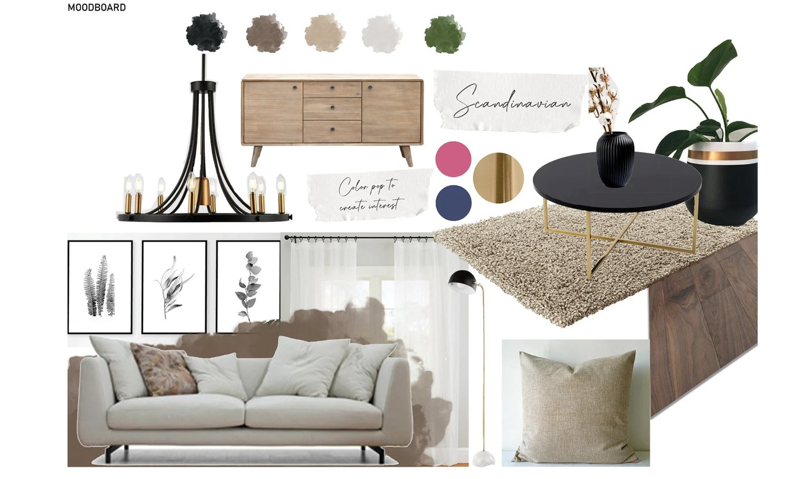
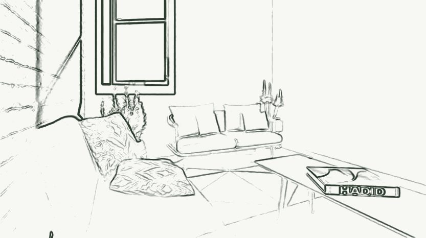

Moving through rooms taught me to design journeys.
Architecture · Residential
A house, in section.
A home designed as a sequence of rooms you move through, from plan to the reading nook.
- Type
- Residence
- Stage
- Studio or built?
- Year
- Year
- Drawn
- Plan, section, interiors

01 · Drawings
Plan and section.

02 · Interiors
Calm, room by room.




What it taught me
Space, then screens.
I trained as an architect. This is where my product thinking started.
A calm room and a calm screen follow the same rules.
Small moments make a space feel personal.